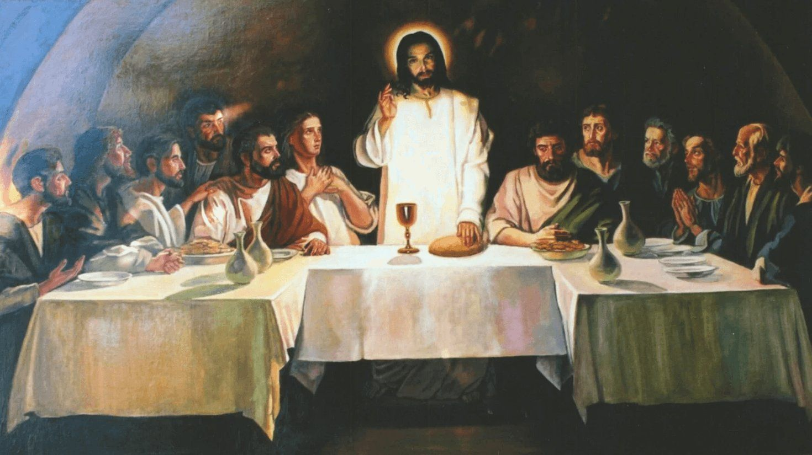
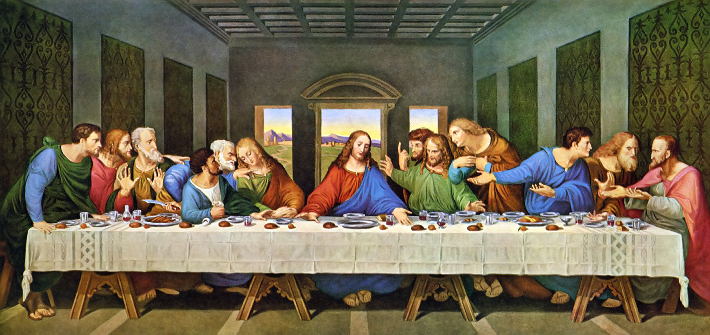
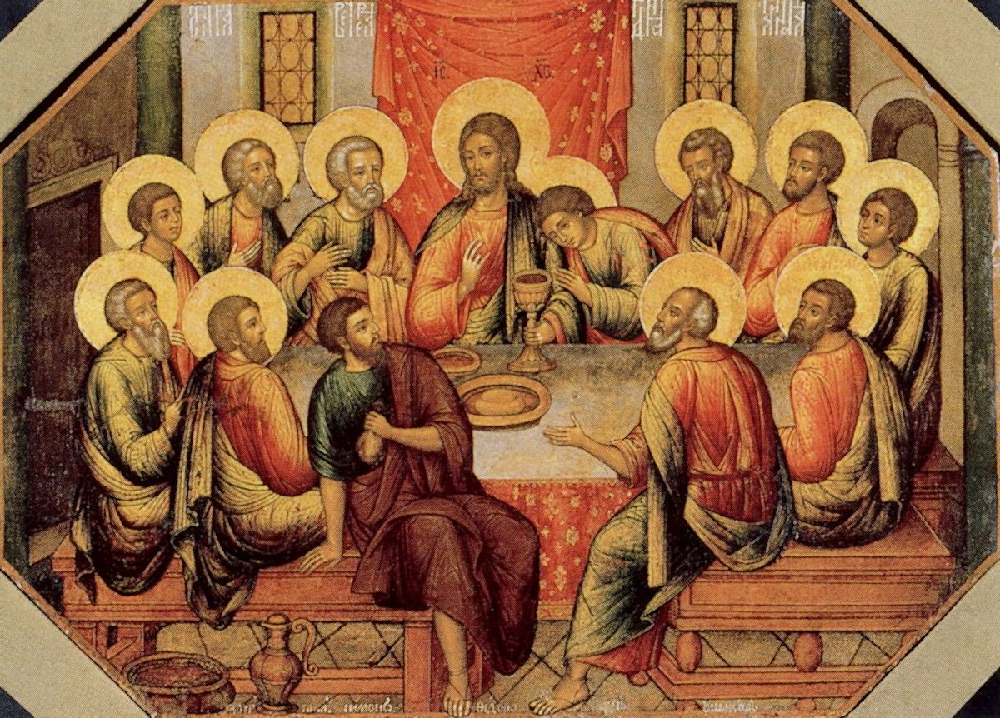
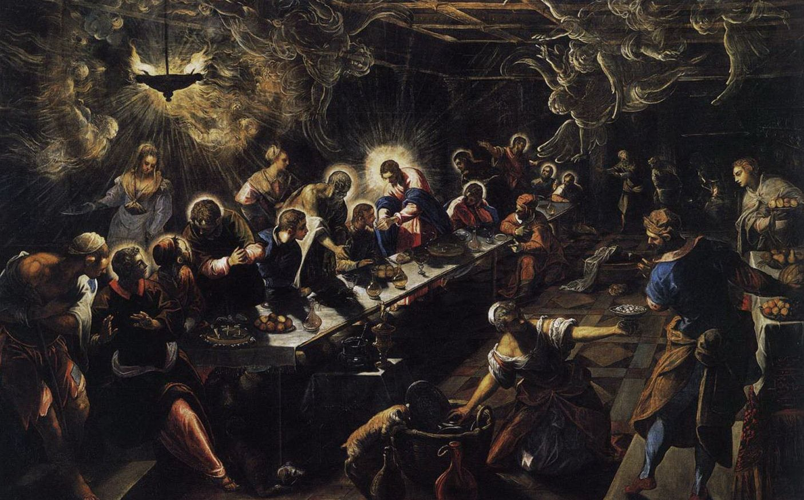

Икона «Тайная вечеря»: значение, в чем помогает
Икона «Тайная вечеря» — одна из самых известных и узнаваемых росписей во всем мире. Какое значение несет в себе данный образ, в чем помогает икона «Тайная вечеря» верующим. Кто изображен на росписи.

Содержание
Если вы не слишком набожный человек, то могли и не заметить, какая монументальная икона красуется на Царских Вратах каждого православного храма, непосредственно над входом в алтарь. А между тем, эта духовная святыня служит визуальным воплощением основной идеи христианской религии.
Глобальный смысл иконы «Тайная вечеря» понятен каждому, кто хоть более-менее знаком со Священным Писанием. Однако этот образ имеет множество смысловых слоев, поэтому ему посвящено множество научных работ и богословских трактатов. Их основные положения должен знать каждый человек, считающий себя православным христианином.
Значение иконы «Тайная вечеря»
В основу сюжета иконы «Тайная вечеря» легло великое событие, подробно описанное в Новом Завете. Напомним о нем в общих чертах в привязке к иконографии образа.
Общеизвестно, что Иисус Христос по рождению был иудеем и, конечно, отмечал праздники, принятые в культуре этого народа. Поэтому понятно, почему в основу сюжета легло празднование ветхозаветной Пасхи – Песаха.
Ветхозаветная Пасха имеет принципиально иное значение, чем христианская. Она посвящена Великому Исходу евреев из Египта. Ныне Песах является одним из главнейших государственных праздников Израиля и отмечается в течение недели.
В этот день почти две тысячи лет назад Иисус Христос пригласил своих учеников на празднование Пасхи и указал на дом, где должен был состояться тайный ужин. Согласно иудейскому обычаю, для праздника был испечен традиционный пресный хлеб и приготовлено вино (хотя некоторые исследователи утверждают, что это был другой напиток, вплоть до чистой воды).
Когда настало время, Иисус и ученики возлегли перед трапезой, в чем был глубочайший смысл. В то время иудеи были угнетаемым народом и чувствовали себя фактически рабами. Это значит, что они должны были вкушать пищу фактически на ходу, а возлежать за трапезой могли только свободные люди.
Евангельский сюжет Тайной вечери демонстрирует, что Иисус Христос дал людям не только веру, но и желанную свободу. Но, к сожалению, втайне: Учитель и апостолы уже подвергались гонениям и не могли встретиться открыто. Отсюда и название – Тайная вечеря (то есть, ужин).
На этой эпохальной встрече Иисус раскрыл перед апостолами свою Божественную суть и основные постулаты христианского учения. Кульминацией действа стало установление таинства Евхаристии – то есть, приобщения людей к Богу.
Во время тайной трапезы Иисус кормил учеников хлебом и угощал вином, говоря о том, что они вкушают плоть и кровь его. Этим самым он подчеркнул, что приносит себя в жертву роду людскому. Это Евхаристия – ключевой момент христианской религии, положивший начало таинству причастия.
Причастие – главный обряд христианской церкви, во время которого люди вкушают хлеб и вино, символизирующие тело и кровь Господни. Считаются что в этот момент верующие соединяются с Богом, принимая в себя его великую жертву.
Не менее показателен и момент, когда Христос омывает ноги собственным ученикам. Тем самым он учит их равенству и смирению, будто говоря им: среди людей, преданных Богу, не может быть рабов и господ – все равны перед лицом Господа.
Во время трапезы Иисус печален и сосредоточен: он знает о предательстве одного из апостолов и предчувствует свою великую, но страшную участь. Тем не менее, он не указывает на предателя Иуду и дозволяет ему вместе с другими вкушать свою кровь и плоть. Это значит, что дорога к спасению открыта для самого страшного грешника – Господь способен простить абсолютно все.

После трапезы Иисус с учениками выходит в сад, где его хватают стражники и бросают в темницу. А дальше – путь на Голгофу, мученическая смерть на кресте, воскресение из мертвых и начало новой религии.
Таким образом, икона «Тайная вечеря» символизирует три основных постулата христианской церкви:
- Евхаристию (приобщение к Господу через его жертву);
- смирение как высочайшую доблесть (омовение Христом стоп апостолов);
- всепоглощающую любовь к ближнему (Иисус не отвергает Иуду, даже зная о его предательстве).
Не стоит сбрасывать со счетов и акцент на человеческой природе Христа. Он внутренне страшится уготованной кровавой участи (как любой человек), но отдает себя в руки Бога и подчеркивает, что все будет по велению Его.
История образа
Первые иконы тайной вечери Иисуса Христа с учениками появились достаточно рано. Самые старинные изображения этого сюжета датированы VI-VII столетиями. Это, прежде всего, фрески и мозаики, которые располагались над входами в храмы и в нефах раннехристианских храмов. Известны и тематические иллюстрации в древних рукописных Евангелиях.
Великие живописцы Средневековья неоднократно обращались к теме Тайной вечери. Причем она была доминантой не только для икон, но и для светских живописных полотен религиозной тематики, весьма популярной в те времена.
Наиболее известным образцом «Тайной вечери» является монументальная роспись, по сей день украшающая стены трапезной доминиканского монастыря Санта-Мария-делле-Грацие в Милане. Она принадлежит кисти одного из величайших гениев мировой истории, Леонардо да Винчи. С созданием этой фрески связано множество легенд.

Великий Леонардо трудился над бессмертным шедевром около более трех лет. Он хотел достигнуть совершенства и искал идеальных натурщиков для каждого персонажа.
Натура для Иисуса Христа была найдена очень быстро: художнику попался на глаза юный певчий при церкви с возвышенным и одухотворенным ликом. Вскоре были написаны и другие персонажи. Хотя, с точки зрения обывателя, выбор Да Винчи не всегда понятен. Например, святой Иоанн написан явно в женственном облике.
Тем не менее, работа близилась к завершению, но маэстро никак не мог найти натурщика для образа Иуды. А заказчик шедевра, Людовико Сфорца, торопил мастера.
В конце концов, маэстро увидел пьяницу, валявшегося в луже. Лицо его было еще не старым, но изможденным пороками и неправедным образом жизни. Леонардо привел его в мастерскую – и пьяница вздрогнул: он узнал неоконченную фреску. Как оказалось, это был тот самый юноша-певчий, с которого маэстро ранее писал Иисуса Христа!
Скорее всего, история о певчем-пьянице – это легенда, но весьма символичная. Она демонстрирует, насколько высоко может взлететь человек благодаря вере в Бога, и как низко пасть, потакая собственным греховным страстям.
Первые православные иконы Тайной вечери именно над алтарными вратами появились, скорее всего в Египте. Во всяком случае, они имеются в самых древних из дошедших до нас коптских церквях.
В русских православных храмах подобная традиция установилась гораздо позднее, примерно в XV-XVI столетиях. Церкви, построенные позже этого времени, обязательно украшались надалтарным изображением Тайной вечери. В некоторых храмах подобные монументальные шедевры занимали (и занимают) всю площадь Царских врат.
К теме Тайной Вечери обращались многие русские иконописцы. Например, икона Андрея Рублева, написанная в 1425-1427 годах и чудом дошедшая до наших времен, считается бессмертным шедевром православной иконописи. Кстати, на ней Андрей Рублев изобразил Иуду в образе себя самого, то есть, вписал в икону автопортрет.
А в Сергиево-Посадском историко-художественном музее-заповеднике хранится чудесная икона кисти Симона Ушакова. Несмотря на то, что шедевр был написан в 1685 году, он чудесно сохранился и по сей день радует восхищенных зрителей яркими красками.

Кто изображен на полотне
На иконе изображен один из самых знаковых моментов христианской истории, описанный в трех Евангелиях. Канонический сюжет – Иисус, восседающий за трапезным столом вместе с 12 апостолами, включая Иуду.
Как уже было сказано выше, Иисус и апостолы не сидели за столом, а возлежали – так говорит Евангелие, и нет оснований этому не верить (тогда среди свободных людей бытовала подобная традиция). Да и обеденных столов тогда еще как таковых в восточных культурах не существовало.
Тем не менее, на православных иконах Иисус и его ученики именно восседают за столом, что противоречит Евангелию. В этом есть глубочайший духовный смысл: стол символизирует алтарь, на котором Иисус приносит себя в жертву во имя человечества.
На столе отсутствует жертвенный агнец, обязательный для празднования еврейской Пасхи. Его роль играют хлеб и вино – тело и кровь Господни. Иисус сам раздает их апостолам, чем подчеркивает добровольность жертвы.
В православной традиции принято изображать всех персонажей со сверкающими нимбами (Иисуса – с крестообразным). Исключение составляет лишь Иуда, «прославившийся» как величайший предатель в истории человечества. Его зачастую изображают несколько в стороне от основной группы апостолов. Иногда Иуда сам тянется за жертвенным хлебом, что подчеркивает то, что именно он предал Христа.
Очень часто Иуду изображают с ларцом, кошелем или мешочком, где хранятся те самые тридцать серебренников – считается что за эти деньги ученик и предал своего учителя. Он рассказал первосвященникам о доме, где будет проходить Тайная вечеря, а затем поцеловал Иисуса в саду, тем самым указав на него стражникам.
На светских полотнах различных художников мы можем увидеть различие трактовок евангельского сюжета. Например, для многих из них образ Иуды является чуть ли не центральным – живописцев интересует история его предательства, в которой очень много противоречий.
Согласно Евангелию, после предательства Иуда устыдился содеянного до такой степени, что повесился. Способен ли на это человек, вероломно подаривший учителю «иудин поцелуй»? Сомнительно, но события того времени сейчас проверить на правдивость невозможно.
Светские полотна на религиозную – это не иконы, написанные по четко установленным канонам. Поэтому художники зачастую значительно отходят от традиционного видения эпохальной сцены вечери.
Например, к этой тематике обращался даже Сальвадор Дали – отец сюрреализма. На его полотне, пронизанном светом, ученики изображены со склоненными в молитве головами – невозможно различить даже лиц. А венецианец Тинторетто, творивший в эпоху позднего Ренессанса, и вовсе уподобил Тайную вечерю ужину на многолюдном постоялом дворе.

Словом, интерпретаций Тайной вечери насчитывается множество. Но на то оно и искусство, чтобы передавать картину мира через призму восприятия художника!
Картины на религиозную тематику иконами не считаются. Их можно вешать в доме, но подальше от домашнего алтаря. Светская живопись в православном иконостасе неприемлема!
В чем помогает икона
Икона «Тайная вечеря» помогает людям осознать суть христианского вероучения, основанную на идее жертвенности Бога. Если в других религиях учителя предлагают последователям некие отвлеченные истины или что-то извне, то в христианстве Господь преподносит верующим самого себя. Такого нет ни в одной религии мира.
Иисус кормит учеников своей плотью и кровью во имя единения. Более того, несмотря на удивление и некое сопротивление апостолов, он омывает им ноги, подчеркивая идею смирения и равенства. А ведь это сам Бог, пусть и в образе человека! И, наконец, зная о предательстве Иуды, Спаситель не отвергает его, оставляя открытым путь в Царствие Небесное даже для великих грешников.
В христианстве Тайная Вечеря соотносится с Великим Четвергом, который в народе называют Чистым. Он отмечается на неделе перед Пасхой. В этот день принято наводить чистоту в доме, красить яйца, печь куличи. Но за бытовыми заботами не стоит забывать о том, что в Великий Четверг нужно обязательно сходить в церковь и прикоснуться к таинству Евхаристии.